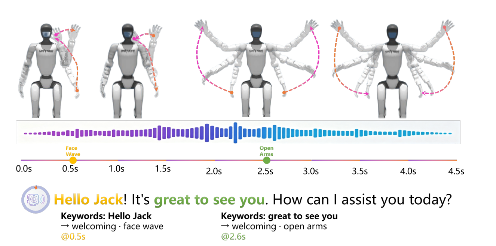
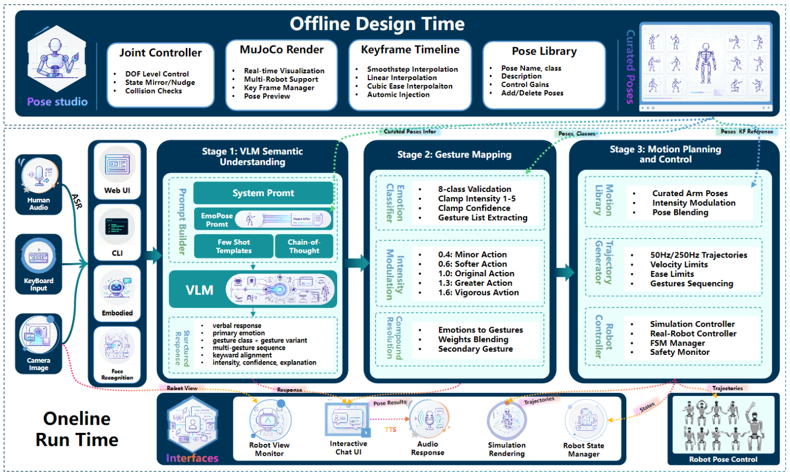
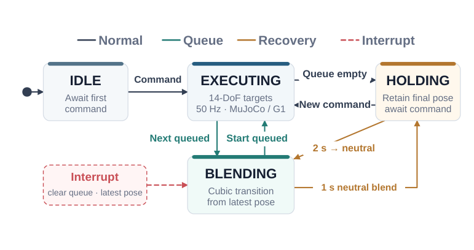
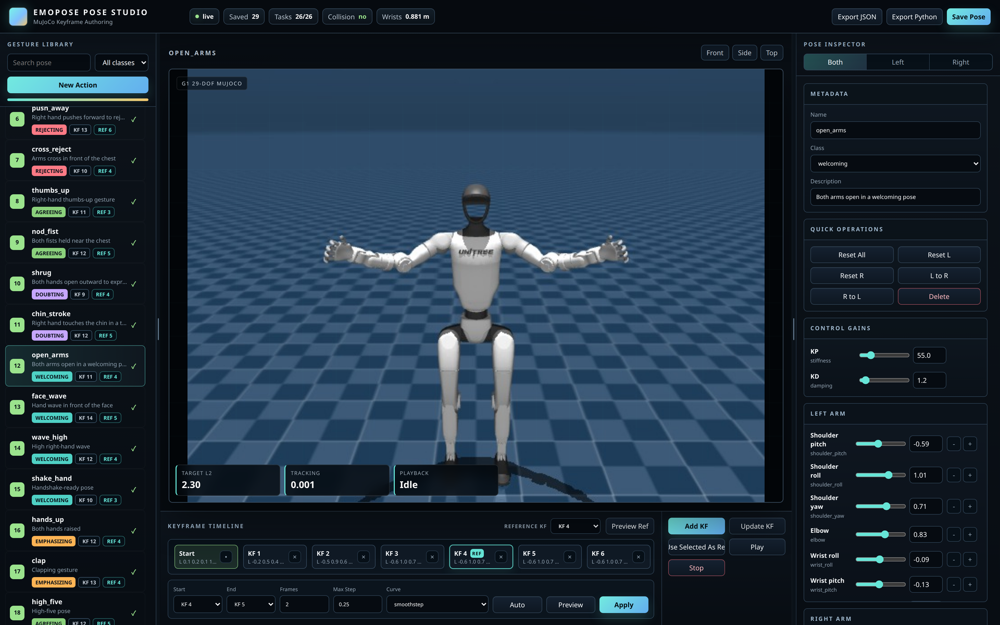
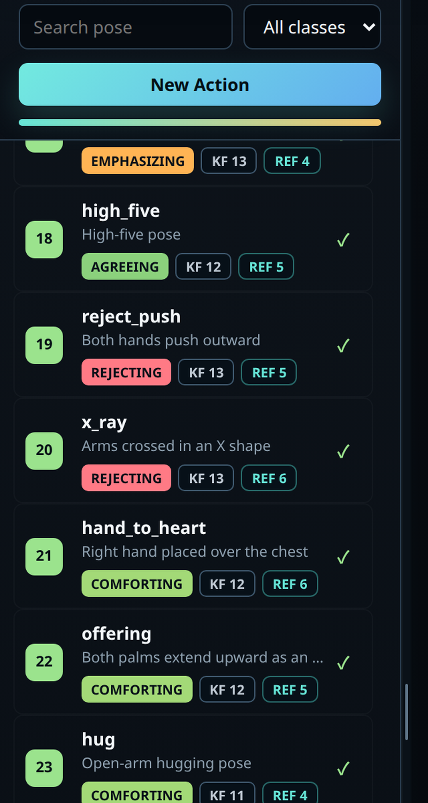
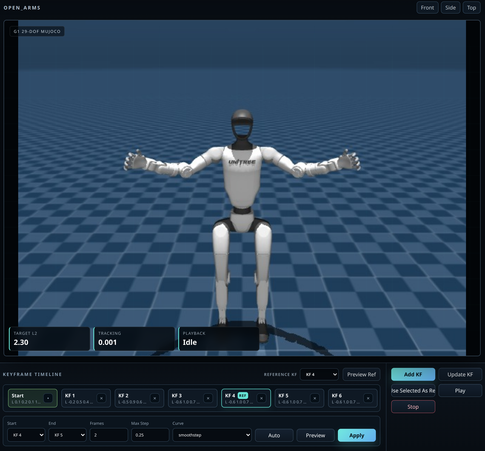
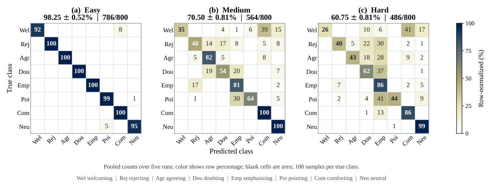
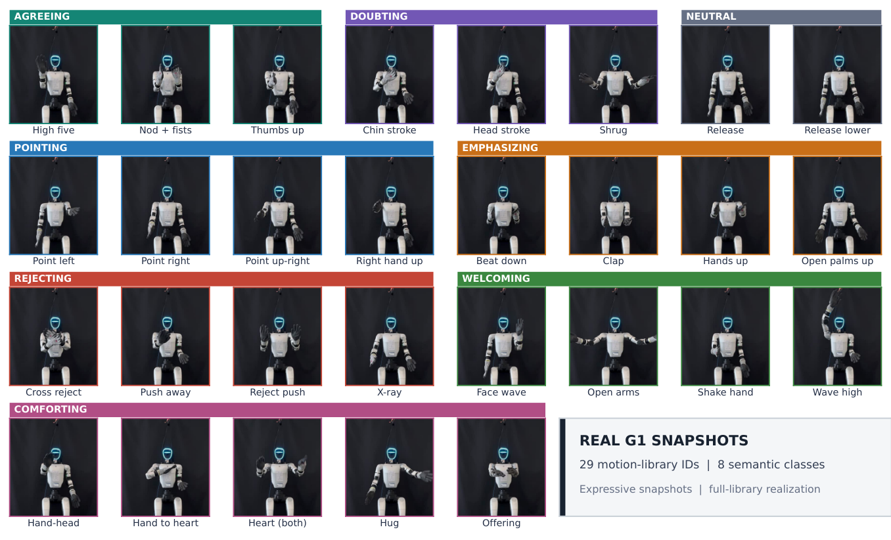
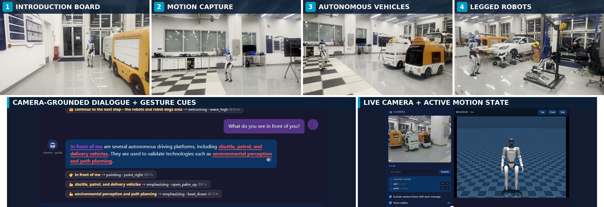

An executable semantic interface between a vision-language model and a robot-owned motion library — language selects the communicative intent, deterministic robot-side software owns every 14-DoF joint target.
Daojie Peng,
Bingtao Wang,
Fulong Ma,
Wenjun Yue,
Liang Zhang,
Jun Ma†
HKUST(GZ) · Shandong University · RoboScience | †Corresponding author
Socially competent humanoid robots must communicate affect and intent through gesture as well as speech, yet open-ended interaction must become motion that is both expressive and executable on a specific body. This demands semantic flexibility for contextual social intent while preserving deterministic, embodiment-aware robot control. We present EmoPose, a vision-language model (VLM)-guided framework that bridges this gap through an executable semantic interface. Given language, dialogue history, and optional visual context, the VLM selects an ordered gesture plan containing a communicative class, library variant, intensity, and speech anchor. A scalable robot-owned motion library defines the available expressive vocabulary and the source of 14-DoF joint targets. Pose Studio supports automatic trajectory generation, MuJoCo preview, and automatic synchronization of new library entries with the VLM guide; deterministic robot-side modules validate plans, construct trajectories, schedule gestures, and manage queueing and interruption. This division lets the interaction repertoire grow for new social contexts without changing the control interface or delegating raw joint commands to the foundation model. On the EmoPose-Bench, structured GPT-5.5 planning reaches 98.25 ± 0.52% on the Easy tier and 76.50 ± 0.54% overall, exceeding same-model direct-label prompting. Further tests validate dialogue-context use and ordered multi-action composition. The system completes the nominal MuJoCo suite and realizes all 29 authored variants on the physical Unitree G1. A four-stop laboratory tour demonstrates expressive narration with interruption, camera-grounded dialogue, and navigation.

The VLM never emits joint values. It emits a semantic record; deterministic robot-side modules resolve that record against a live motion library and publish 14-DoF targets at 50 Hz. The control interface is therefore stable while the expressive vocabulary grows.
Given utterance x, optional dialogue history h, and a live class-variant guide
regenerated from the library, the VLM returns a verbal reply and an ordered plan of records
z = (class, variant, intensity, trigger, confidence). Bare or fenced JSON is accepted;
numeric fields are clamped; unknown classes map to neutral; decoding failures invoke a logged
keyword fallback.
L = {(n, c, Q, d, m)} holds 29 motion sequences plus two built-in neutral poses —
unique name, semantic class, K = 3–14 fourteen-DoF keyframes over the seven joints of each arm,
duration (clip(0.3(K−1), 1, 5) s by default), and motion type. Pose Studio generates and
smooths trajectories, previews in MuJoCo, and synchronizes every new entry with the resolver and the
VLM guide.
Exact-name lookup when the variant is loaded, class-default primitive on a name miss, neutral on an
empty class. The command-source invariant q_cmd = G(resolved, intensity, q_last) keeps
every joint target owned by local software. Five-level intensity scales interior excursion about the
first keyframe with ai ∈ {0.4, 0.6, 1.0, 1.3, 1.6} and hard-limit projection
δ = 0.02 rad. Each keyframe segment is subdivided into M = 5 smoothstep increments
s(u) = 3u² − 2u³, then linearly resampled at 50 Hz, starting from the latest published pose.
For synthesized audio of duration Ta, the first occurrence of trigger
tk in the reply r schedules the center of that phrase at
τk = (pos(tk; r) + |tk|/2) / max(|r|, 1) · Ta
(Eq. 10). Missing anchors interpolate between neighboring matches; with no trigger match,
Mg gestures release at Ta(k+1/2)/Mg, and a
single gesture releases immediately.
One active trajectory plus a FIFO queue across IDLE · EXECUTING · HOLDING · BLENDING. EXECUTING publishes 14-DoF targets at 50 Hz to MuJoCo or the physical G1. An empty queue leads to HOLDING; a queued successor passes through an explicit cubic blend of at most 0.3 s. After 2 s idle, a non-neutral endpoint blends to neutral over 1 s. Interruption clears pending commands and restarts a 0.3 s blend from the latest published pose.
The same specification drives trajectory generation, language guidance, resolution, MuJoCo, and physical publication to the Unitree G1. The stack further composes gesture with navigation in the four-stop laboratory tour: onboard odometry drives the route, EmoPose schedules narration gestures, visitors can interrupt, and a VLM answers camera-grounded questions.
| Field | Accepts | Runtime behaviour |
|---|---|---|
| Class | 8 labels — pointing, emphasizing, rejecting, agreeing, doubting, welcoming, comforting, neutral | Invalid labels deterministically map to neutral |
| Variant | Any loaded library name | Global lookup; class-default primitive on a miss (neutral if the class is empty). Keeping both class and variant makes class–variant agreement auditable |
| Intensity | Integer 1–5 | Clamped, then applied via Eq. (7) as ai ∈ {0.4, 0.6, 1.0, 1.3, 1.6} about the first keyframe, hard-limit projection δ = 0.02 rad |
| Trigger | Lexical phrase, or missing | Matched trigger schedules release at Eq. (10); missing anchors interpolate between neighboring matches |
| Confidence | Scalar 0–1 | Clamped and logged only |
| Joint values | absent from the record | Always sourced from L — command-source invariant, Eq. (5) |
Table I. The VLM record never carries joint values; every 14-DoF target is sourced from the robot-owned library.
Intensity scales only the interior excursion about the first keyframe. Level 3 reproduces the library exactly; the endpoint is projected back inside the hard joint limits.


Every keyframe the runtime resolves is authored in Pose Studio, the browser-based
design-time editor behind the robot-owned library L. It embeds MuJoCo directly in the editing
surface, so a 14-DoF keyframe is inspected on the G1 model as soon as it is written. Poses auto-save to
config/g1_poses.json and are picked up by the motion library and the VLM class–variant guide
without manual registration — authoring a new social gesture therefore costs no change to the control
interface or to the sequencer of Figure 3.
config/g1_poses.json, so the runtime
library and the VLM guide stay synchronized with no manual registration step.



A compact, library-grounded expressive vocabulary: each class carries a conversational function, and each variant is a named, keyframed 14-DoF motion with its own default duration and motion type. Two built-in neutral poses complete the repertoire.
Deictic reference: anchors attention to objects, directions, or concepts in the conversation.
Beat/accent: adds force to important or high-salience phrases in the spoken reply.
Conversational stance: communicates refusal, disagreement, or warning.
Conversational stance: signals approval, confirmation, and shared positive intent.
Conversational stance: expresses uncertainty, hesitation, and cautious skepticism.
Social rapport: expresses invitation, greeting, and social warmth.
Social rapport: supports empathy, reassurance, and emotional care.
Neutral baseline: calm recovery poses and non-expressive transitions.
480 human-assisted English utterances (20 per class per tier over 8 classes × 3 tiers). Easy is direct cue matching, Medium is paraphrase robustness, Hard is pragmatic reasoning. GPT-5.5 entries are mean ± sample SD over five passes; other entries are deterministic. First planned class is scored as top-1.
| Method | Easy | Medium | Hard | Overall |
|---|---|---|---|---|
| Ordered planning (ours) | 98.25 ± 0.52 | 70.50 ± 0.81 | 60.75 ± 0.81 | 76.50 ± 0.54 |
| Direct-label GPT-5.5 | 95.00 ± 0.63 | 67.13 ± 2.24 | 54.13 ± 1.14 | 72.08 ± 0.74 |
| Full-direct gain | +3.25 | +3.37 | +6.62 | +4.42 |
| Sentence-BERT, Easy centroids | 97.50 | 58.75 | 52.50 | 69.58 |
| Keyword rules | 62.50 | 16.88 | 11.25 | 30.21 |
| TF-IDF descriptions | 26.88 | 22.50 | 23.13 | 24.17 |
| Jaccard descriptions | 21.25 | 17.50 | 18.13 | 18.96 |
| Uniform chance | 12.50 | 12.50 | 12.50 | 12.50 |
Top-1 intent accuracy (%). Bars are drawn to scale against 100%. The structured interface gap widens as the tier moves from direct cue matching toward pragmatic reasoning.
| Condition or metric | Score (%) |
|---|---|
| Full planner (with history) | 96.69 ± 0.36 |
| Ablation (history removed) | 95.00 ± 1.06 |
| Absolute gain from history | +1.69 ± 0.98 |
| No-overlap audit, full / ablated | 96.68 ± 0.36 / 94.98 ± 1.06 |
| Primary class | 97.75 ± 0.68 |
| Ordered exact | 91.50 ± 0.71 |
| Mean step class / class-multiset F1 | 95.49 ± 0.31 / 97.94 ± 0.28 |
| Input-anchor recall / annotated variant | 99.98 ± 0.03 / 44.88 ± 0.70 |
| Exact, length 2 / 3 / 4 | 96.75 / 94.00 / 81.25 |
Rows 1–4: dialogue-context ablation block. Rows 5–9: ordered multi-action planning on the 320-item sequence suite (80 two-action + 160 three-action + 80 four-action). Five-pass mean ± sample SD; length-specific exact reports means only.
| Metric | Value |
|---|---|
| Trials / motions / intensity | 160 / 8 defaults / level 3 |
| Completed trials | 160/160 |
| Stops / timeouts | 0 / 0 |
| Target-sim joint MAE | 0.04066 rad (2.33°) |
| Per-class MAE range | 0.02289 – 0.05420 rad |
| VLM inference mean / P95 | 3.532 / 4.368 s |
| Trajectory construction mean / P95 | 0.93 / 1.70 ms |
| Command submission mean / P95 | 0.23 / 0.60 ms |
Hosted VLM inference dominates the initial response delay; local trajectory construction and submission are sub-millisecond on average.

Degradation is localized to meaningful semantic boundaries, not to the motion interface. Easy has only 14 errors among 800 decisions (786/800 pooled correct). The leading Medium confusions are welcoming→comforting (39/100) and pointing→emphasizing (30/100). On Hard these each occur 41 times, while doubting→emphasizing occurs 37 times; comforting and neutral still retain 86% and 99% recall on Hard (Hard pooled 486/800). Errors therefore concentrate at boundaries between related communicative acts — supporting the design choice of a compact, library-grounded motion contract, with language-side distinctions improved by relational context and hierarchical intent representations.
Easy-tier top-1 intent accuracy for structured GPT-5.5 planning — 786 of 800 pooled decisions correct across five passes.
Full structured interface minus direct-label GPT-5.5 (72.08 ± 0.74% overall), with model, dataset, sampling, and run count held identical. The gap widens to +6.62 on Hard.
Ordered exact match on the 320-item multi-action suite: 96.75% at length 2, 94.00% at length 3, 81.25% at length 4. Primary-class accuracy 97.75 ± 0.68%.
Class-balanced 50 Hz MuJoCo trials completed (20 per class, 8 default motions, intensity level 3), with 0 stops and 0 timeouts. These are MuJoCo trials — not real-robot trials.
Target-to-simulated joint MAE (2.33°) over 160 trials × 100 resampled points × 14 joints; per-class range 0.02289–0.05420 rad. VLM inference 3.532 s mean / 4.368 s P95.
All 29 authored motion variants realized on the physical Unitree G1 across 8 communicative classes, plus two built-in neutral poses.

Every library variant is shown side by side: the MuJoCo preview generated from the same keyframe record, and the corresponding execution on the physical Unitree G1 under a consistent stationary, overhead-supported protocol.
The same stack guides visitors along four fixed stops — the introduction board, motion-capture area, autonomous-vehicle equipment area, and legged-robot equipment area. G1 onboard odometry drives the route while EmoPose schedules narration gestures. A visitor can interrupt for dialogue or a scene description; a VLM interprets the live camera frame, and EmoPose answers through speech and library-grounded gestures.

The current benchmark is in English only, the physical repertoire is limited to 14-DoF upper-limb gestures, and the tour follows fixed destinations using onboard odometry. Future work includes independently annotated multilingual data and held-out prompt development, extension of the authority architecture to coordinated whole-body behavior, and coupling with more stable localization, navigation, and perception-aware replanning.
If you find EmoPose useful, please consider citing:
@misc{peng2026emopose,
title = {EmoPose: Vision-Language Model Guided Emotion-Aware Gesture Generation for Humanoid Robots},
author = {Peng, Daojie and Wang, Bingtao and Ma, Fulong and Yue, Wenjun and Zhang, Liang and Ma, Jun},
year = {2026},
eprint = {2609.23414},
archivePrefix = {arXiv},
primaryClass = {cs.RO},
howpublished = {arXiv preprint arXiv:2609.23414}
}